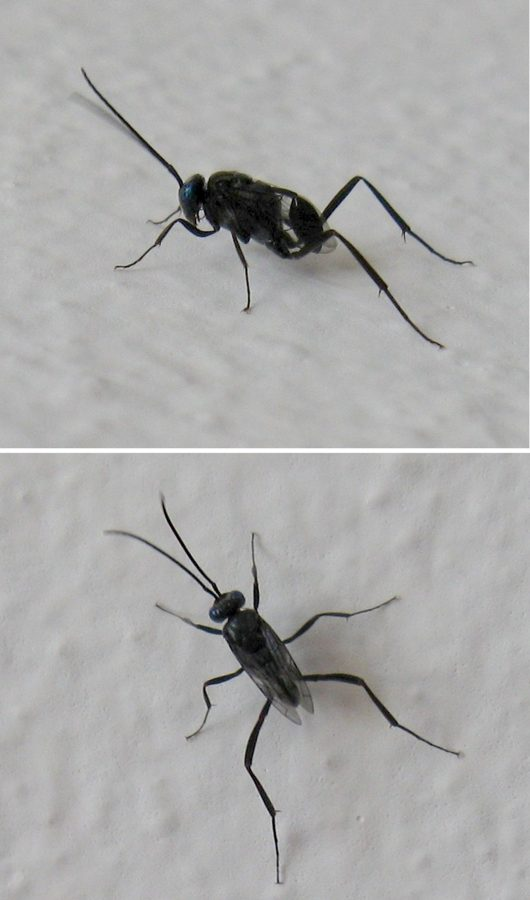

एनसाइन वास्पEnsign Wasp
Evania appendigaster · Evaniidae · INS-0295

- Scientific name वैज्ञानिक नाम
- Evania appendigaster (Linnaeus, 1758)
- Family कुल
- Evaniidae
- Hindi हिंदी
- एनसाइन वास्प
- Local names स्थानीय नाम
- ensign wasp
- Status here यहाँ की स्थिति
- native
- Movement आवागमन
- Resident, here all year
- Known from कहाँ दर्ज
- Others have published records from the wider Awadh–Purvanchal plain, none yet from Basti–Ayodhya अवध–पूर्वांचल से दूसरों के प्रकाशित अभिलेख, बस्ती–अयोध्या से अभी नहीं
- IUCN IUCN
- not evaluated
- Review समीक्षा
- not yet reviewed
When to look कब देखें
Expected mainly in March, April, May, June, July, August, September, October, November. मुख्यतः मार्च, अप्रैल, मई, जून, जुलाई, अगस्त, सितंबर, अक्टूबर, नवंबर में अपेक्षित।
Uses and possibilities उपयोग और संभावनाएँ
Drawn from the documented uses in the profile below, where each is labelled traditional, current or a research lead. All uses →
Connections रिश्ते
Documented relationships from the profiles; the web grows as profiles are written.
एनसाइन वास्प / Ensign Wasp
Evania appendigaster (Linnaeus, 1758) — Evaniidae
एनसाइन वास्प — लंबी टांगों और छोटे झंडे जैसे पेट वाली एक उपयोगी काली ततैया, जो घरों में कॉकरोच के अंडों के भीतर अपने अंडे देकर उन्हें नष्ट करती है।
Quick Identification त्वरित पहचान
| Feature | Description |
|---|---|
| Coloration | Entirely jet-black, non-metallic with finely punctate head and thorax |
| Metasoma (Abdomen) | Tiny, laterally flattened, oval, attached high up on thorax by slender stalk |
| Abdomen motion | Moves tiny abdomen up and down rhythmically like a signalling flag (ensign) |
| Legs | Exceptionally long, spider-like; hind legs very long with spinose tibiae |
| Head and eyes | Broad, transverse head with large, widely separated bluish-green eyes |
| Sting | Completely harmless to humans; lacks functional defensive sting |
Field tip: An all-black, spider-legged wasp walking on indoor walls, rhythmically bobbing a tiny flag-like triangular abdomen up and down.
हिंदी: पूरी तरह काला रंग, मकड़ी जैसी लंबी टांगें और छाती के ऊपर जुड़ा छोटा झंडे जैसा पेट जो लगातार ऊपर-नीचे हिलता रहता है।
Morphology आकारिकी
Measurement not available in consulted sources.
A distinctively structured, medium-small, entirely black solitary wasp easily recognizable by its unusual abdominal insertion. The head is broad, vertical, coarsely punctate, bearing large compound eyes that often reflect pale bluish or greenish tints in life. Antennae are filiform, comprising thirteen segments, inserted close together near the middle of the face.
The mesosoma (thorax) is heavily built, box-like, deeply sculptured with coarse reticulate punctures. The propodeum drops steeply behind. The most remarkable morphological feature is the metasoma (abdomen): it is extremely small, laterally compressed, oval to triangular in profile, and supported on a slender, cylindrical petiole that inserts unusually high on the posterior face of the propodeum, far above the hind coxal insertions.
When walking, the wasp regularly twitches and bobs this tiny flag-like metasoma up and down, giving rise to the common name "ensign wasp". The legs are exceptionally long and slender, particularly the hind pair, which are long and armed with sharp apical tibial spurs and small spines. The wings are clear, transparent hyaline, with dark veins and a prominent dark pterostigma (Stange 2006).
हिंदी: इसका शरीर मजबूत और गहरा काला होता है। इसका पेट बहुत छोटा और चपटा होता है जो एक पतली डंडी के जरिए छाती के ऊपरी हिस्से से जुड़ा रहता है।
Behaviour & Ecology व्यवहार और पारिस्थितिकी
Evania appendigaster is a solitary, diurnal parasitoid wasp that thrives in urban and rural environments wherever domestic cockroaches occur. It does not build nests or form colonies. Adults are frequently encountered walking deliberately across sunny interior walls, window panes, ceilings, and kitchen cupboards.
The female actively searches out the hidden egg capsules (oothecae) of domiciliary cockroaches, particularly the American cockroach (Periplaneta americana, SFL-0006) and the oriental cockroach (Blatta orientalis, SFL-0007). Upon discovering an ootheca hidden in a wall crack or cupboard corner, she inspects it carefully with her antennae, positions herself over the tough capsule, and inserts her short ovipositor through the hardened casing to deposit a single egg inside. The developing wasp larva feeds on the cockroach eggs inside the capsule, completely consuming all of them before pupating within the hollow shell (Stange 2006; Gulmahamad 2007).
हिंदी: यह घरों में दीवारों और खिड़कियों पर धीरे-धीरे चलती है। मादा कॉकरोच के अंडों की थैली को ढूंढकर उसमें अपना अंडा देती है, जिससे कॉकरोच के बच्चे नष्ट हो जाते हैं।
Life Cycle / Phenology जीवन चक्र
Development takes place entirely within the host cockroach egg case. After the wasp egg hatches, the larva molts through several instars while consuming all the developing cockroach embryos contained within the ootheca.
Once full grown, the larva spins a light silken cocoon inside the hollowed-out ootheca and pupates. Under warm conditions, development from egg to adult takes several weeks. The newly formed adult wasp cuts an irregular ragged hole at the end of the cockroach ootheca to emerge. In eastern Uttar Pradesh, multiple generations occur annually, with adults active from March through November.
हिंदी: इसका लार्वा कॉकरोच के अंडे के खोल के भीतर ही पलता है और सारे अंडों को खा जाता है। बाद में वयस्क बनकर खोल में गोल छेद करके बाहर निकलता है।
Host Plants or Prey आहार
Larvae are obligate solitary endoparasitoids of the egg capsules of blattid cockroaches, specifically Periplaneta americana and Blatta orientalis. Adults feed on honeydew secreted by aphids, plant nectar, and water droplets from condensation.
हिंदी: इसके बच्चे केवल कॉकरोच के अंडों को खाते हैं। वयस्क वास्प फूलों का रस और मीठा पानी पीते हैं।
Predators / Natural Enemies शत्रु
Adults walking on walls are preyed upon by house geckos (Hemidactylus) and hunting spiders (Salticidae and Sparassidae). Because they lack a chemical defense or powerful venomous sting, they rely on rapid flight and jerky evasive hopping to escape predators.
हिंदी: घरों की छिपकलियां और मकड़ियां इन वास्प्स को पकड़कर खा जाती हैं। इसमें डंक न होने से यह खुद का बचाव भागकर ही करती है।
Agricultural / Human Relevance कृषि प्रासंगिकता
Evania appendigaster is an exceptionally beneficial insect in human habitations. By destroying the egg capsules of domiciliary cockroaches before they hatch, it provides valuable natural biological control of disease-carrying domestic pests. It does not bite, cannot sting humans, does not damage food, and should be protected when encountered indoors.
हिंदी: यह घरों के लिए बहुत लाभदायक कीट है। यह गंदगी और बीमारी फैलाने वाले कॉकरोचों को उनके अंडे में ही खत्म कर देता है। यह इंसानों को कभी नहीं काटता।
Expected Locally स्थानीय रूप से अपेक्षित
Not a field record. Written from published accounts for eastern Uttar Pradesh. No confirmed local sighting yet — if you have seen it, that is what the atlas needs.
अभी तक स्थानीय पुष्टि नहीं। यह विवरण प्रकाशित स्रोतों से है, किसी अवलोकन से नहीं।
GBIF holds published records from the wider Awadh–Purvanchal plain, none yet from Basti–Ayodhya. Expected throughout Basti, Faizabad/Ayodhya, and neighboring towns in domestic kitchens, grocery godowns, and older brick buildings where American cockroaches breed. Look on whitewashed walls or window sills on warm afternoons for a black, long-legged wasp flicking its tiny abdomen. A first record would be a photograph of the adult with place and date, sent through the About page.
Distribution वितरण
Global range: Cosmopolitan worldwide throughout tropical and temperate regions, distributed globally in association with synanthropic cockroaches.
In India: Widespread across all Indian states and territories in urban and rural habitations.
In Uttar Pradesh: Recorded from residential, commercial, and agricultural settlements throughout the Gangetic plain.
In Basti district / eastern UP: Expected in every town and rural village where cockroach populations occur in domestic buildings.
हिंदी: यह पूरे विश्व में जहां भी कॉकरोच पाए जाते हैं, वहां मौजूद है। उत्तर प्रदेश के सभी जिलों के घरों और गोदामों में यह मिलती है।
Research Questions शोध प्रश्न
- What is the natural parasitism rate of Evania appendigaster on Periplaneta americana oothecae in Awadh rural households?
- Does the widespread indoor use of synthetic pyrethroid insecticides disproportionately harm this beneficial parasitoid?
- How long can adult wasps survive indoors in the absence of floral nectar sources?
- क्या बस्ती जनपद के घरों में यह वास्प कॉकरोच की संख्या को नियंत्रित करने में महत्वपूर्ण भूमिका निभाती है?
- क्या रसोईघरों में कीटनाशकों के छिड़काव से इस मित्र कीट की आबादी घट रही है?
Similar Species मिलती-जुलती प्रजातियाँ
| Species | Key Difference | हिंदी |
|---|---|---|
| Hyptia spp. (Lesser Ensign Wasps) | Much smaller; petiole shorter; parasitize smaller wood cockroaches rather than domestic species | छोटी एनसाइन वास्प |
| Sphex spp. (Digger Wasps) | Much larger; abdomen attached low; active diggers in sandy soil; hunt grasshoppers | डिगर वास्प |
| Sceliphron spp. (Mud Dauber Wasps) | Body black and yellow; extremely elongated petiole; builds mud nests for spiders | कुम्हारी ततैया |
Field rule: Entirely jet-black body, very long spider-like hind legs, and a tiny oval abdomen attached high on the thorax that bobs rhythmically = Evania appendigaster.
Taxonomy & Classification वर्गीकरण
Original description. Described by Carl Linnaeus (1758) in Systema Naturae (10th ed.), p. 566, under the original name Sphex appendigaster. Later made the type species of the genus Evania Fabricius, 1775. The specific name appendigaster is derived from Latin, referring to the tiny, appendix-like abdomen.
Subspecies. Monotypic — no subspecies are currently recognized.
Family and order placement. Order Hymenoptera, suborder Apocrita, family Evaniidae (ensign wasps). The family is an ancient lineage characterized by the high insertion of the metasoma on the propodeum.
IUCN status rationale. Not evaluated. Abundant, cosmopolitan, and thriving alongside human settlements globally.
हिंदी: इसे 1758 में लिनिअस ने वर्णित किया था। यह इवानिड्डी परिवार की सदस्य है, जिसकी पहचान पेट का छाती से ऊपर जुड़ा होना है।
Photo Gallery फोटो गैलरी
No photos yet — add field photos to media/species/ensign_wasp/ and run node scripts/sync_photos.js.
Photos needed आवश्यक फोटो
- [ ] Adult lateral view on indoor wall showing high-attached flag-like abdomen (दीवार पर बैठी वास्प की तस्वीर)
- [ ] Female inspecting or ovipositing into a cockroach ootheca (कॉकरोच के अंडे पर बैठी मादा की तस्वीर)
References संदर्भ
- Linnaeus, C. (1758). Systema Naturae per Regna tria naturae (10th ed.). Holmiae, vol. 1, 824 pp.
- Stange, L. A. (2006). A Cockroach Egg Parasitoid, Evania appendigaster (Linnaeus) (Hymenoptera: Evaniidae). EDIS, 2006. doi:10.32473/edis-in319-2000
- Gulmahamad, H. (2007). First California Record of the cockroach ootheca parasitoid, Evania appendigaster (Linnaeus, 1758) (Hymenoptera: Evaniidae). The Pan-Pacific Entomologist, 83(4), pp. 358–359. doi:10.3956/2007-06.1
- GBIF Occurrence Data — Evania appendigaster, India (2025).
Source file: species/fauna/insects/ensign_wasp.md